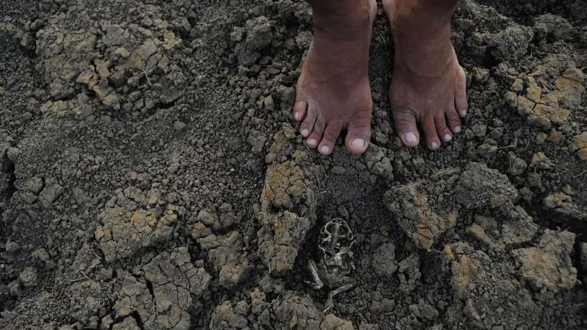
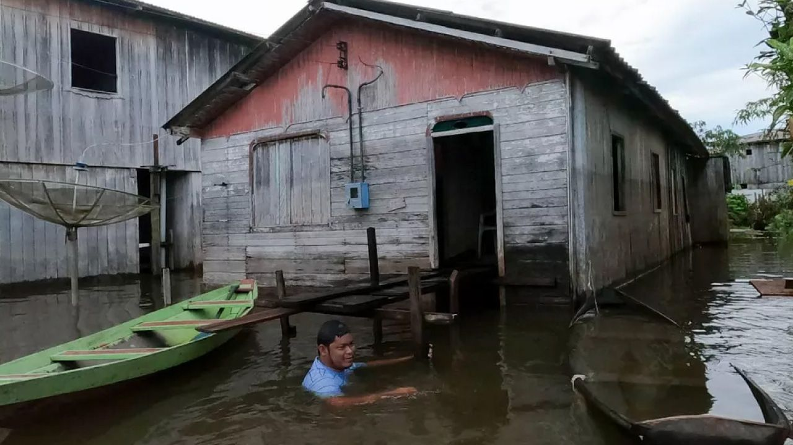
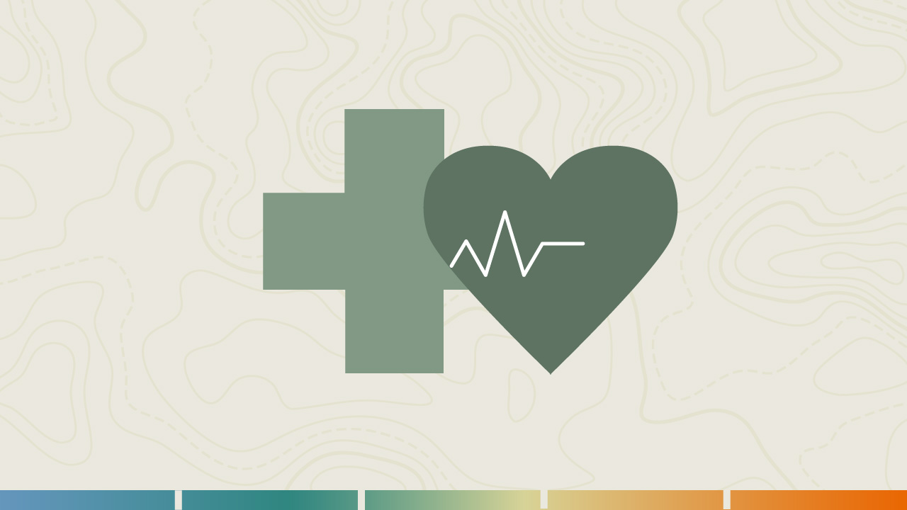
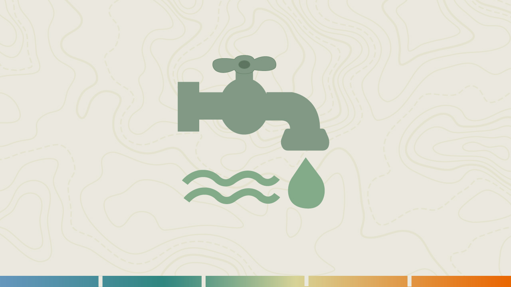
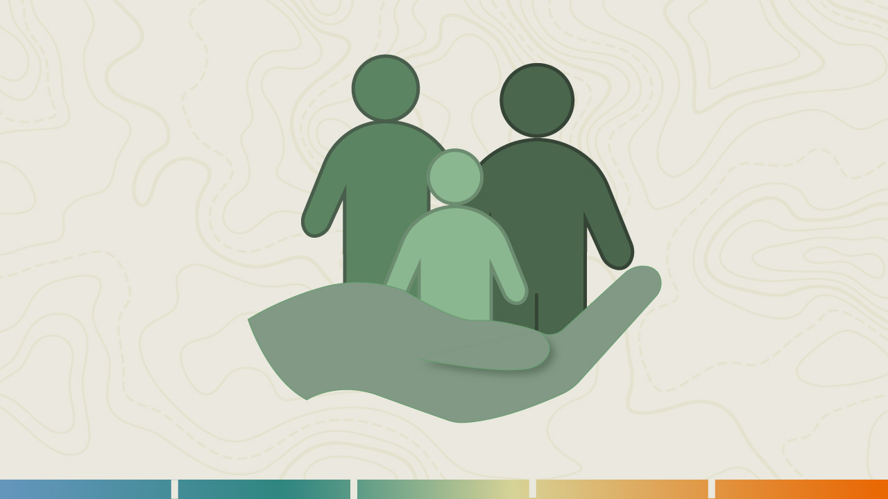
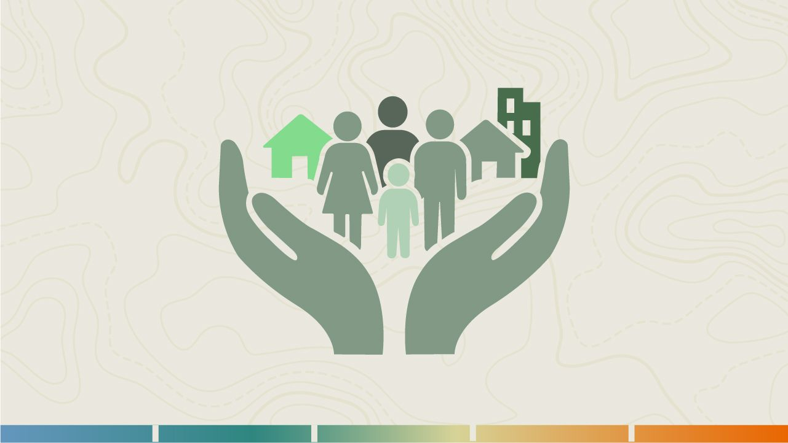
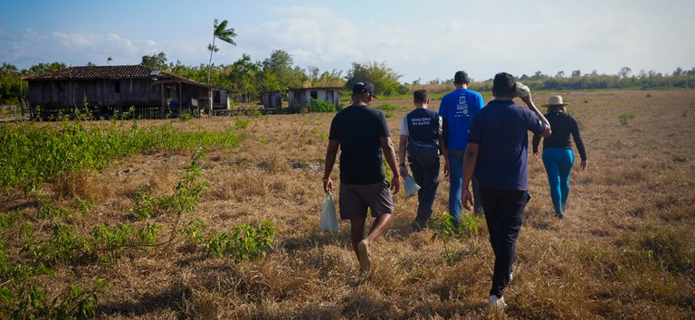

Os desastres extensivos e seus efeitos na saúde
Seja bem-vindo(a) à segunda aula do módulo III.
Vamos agora analisar os impactos de longo prazo dos eventos extensivos sobre a saúde, a infraestrutura e as vulnerabilidades presentes no território.
Ao final desta aula, você estará apto(a) para:
- Diferenciar a relação entre mudanças climáticas, crise hídrica e vulnerabilidade populacional; e
- Analisar os efeitos dos desastres extensivos sobre a saúde das populações, relacionando-os aos determinantes sociais, ambientais e institucionais e discutindo os desafios que esses fenômenos impõem à organização e à resposta do SUS.
Na aula anterior, aprendemos que os desastres extensivos são processos de início e avanço gradual, cujos impactos se acumulam com o tempo. Agora, vamos observar como esse processo de deterioração ambiental e social se traduz em adoecimento das pessoas.
Quando o desastre faz adoecer: os impactos prolongados sobre a saúde
A primeira ideia importante é que todo desastre tem dimensão sanitária, mesmo quando ela não é imediatamente visível.
Ouça a seguir o áudio em que uma sanitarista atuante na Vigilância Sanitária e na Vigilância em Saúde Ambiental compartilha sua experiência profissional para relatar a relação entre seca, estiagem e crise hídrica no contexto das mudanças climáticas.
“Sou sanitarista e atuo nas áreas de vigilância sanitária e vigilância em saúde ambiental, em uma região que inclui municípios do semiárido, onde a seca e a estiagem fazem parte da realidade de muitas comunidades.
Um dos principais desafios que enfrentamos é a escassez hídrica. Muitas pessoas precisam recorrer a fontes alternativas ou armazenar água em casa, o que exige um acompanhamento mais próximo da vigilância ambiental em relação à qualidade da água consumida pela população.
Também observamos impactos importantes na saúde, como o aumento de casos de diarreia e de doenças de veiculação hídrica, além do risco de arbovirose associado ao armazenamento inadequado da água.
Outro problema frequente são os agravos respiratórios relacionados à baixa umidade do ar, à poeira e às altas temperaturas.
Na vigilância sanitária, os desafios envolvem o acompanhamento de sistema alternativo de abastecimento de água e a orientação sobre as condições adequadas de higiene e armazenamento, especialmente em situações de maior vulnerabilidade.
Um aspecto que chama a atenção é que, em muitas localidades, a seca acaba sendo vista como algo normal, parte da rotina. E isso pode dificultar a percepção dos riscos à saúde e a adoção de medidas preventivas. Por isso, considero fundamental o trabalho integrado entre a Vigilância Ambiental, Vigilância Sanitária, a Vigilância Epidemiológica, a Vigilância em Saúde do Trabalhador e a Atenção Primária à Saúde.
Essa articulação fortalece a identificação dos riscos, o monitoramento dos agravos e a construção de respostas mais efetivas para que possamos proteger a saúde da população diante dos impactos da seca e da estiagem.”
Secas prolongadas, estiagens, inundações graduais e crises de abastecimento não causam destruição súbita, mas alteram as condições básicas que sustentam a saúde: o acesso à água potável, à alimentação segura, à moradia adequada e aos serviços de saúde.
Esses efeitos se expressam de formas distintas. Vamos entender cada um deles.
Secas e estiagens
Nas secas e estiagens, há redução da disponibilidade e da qualidade da água, aumento da insegurança alimentar e nutricional, agravamento de doenças crônicas e surgimento de sofrimento mental decorrente da escassez e da perda de meios de subsistência (SENA; ALPINO, 2021).
Aprofunde seus conhecimentos sobre secas, desigualdades e saúde no Semiárido brasileiro. Acesse o seminário da Cidacs/Fiocruz Bahia.
Inundações graduais
Nas inundações graduais, há contaminação dos mananciais, proliferação de doenças de veiculação hídrica e dificuldade de acesso aos serviços de saúde devido ao alagamento e ao isolamento das comunidades (SILVA, 2019).
Crises hídricas urbanas
Nas crises hídricas urbanas, o armazenamento inadequado de água pode aumentar o risco de arboviroses, leptospirose e doenças gastrointestinais, além de comprometer o funcionamento das unidades de saúde (ANAZAWA; CARMO; MONTEIRO, 2017).
Acesse o link abaixo e ouça o áudio do médico patologista e professor da Faculdade de medicina da USP, Paulo Saldiva, sobre como a crise hídrica pode afetar saúde da população.
Fonte: Rádio USP/ Paulo Saldina
Esses exemplos mostram que os desastres extensivos produzem agravos múltiplos, interligados e de longa duração. São fenômenos que se manifestam no cotidiano das pessoas e exigem do sistema de saúde capacidade de resposta contínua e integrada.
Ouça a seguir o áudio em que a médica da Estratégia Saúde da Família e do Centro de Referência em Saúde do Trabalhador compartilha sua experiência e conhecimentos sobre os efeitos da seca, da estiagem e das crises hídricas na saúde da população, destacando os desafios enfrentados pelos serviços de saúde diante da redução da disponibilidade de água e do agravamento das vulnerabilidades sociais.
“Realmente, o trabalhador do Semiárido, especificamente do Nordeste do Brasil e da Bahia, ele sofre muito com esse período de seca e estiagem.
Eu percebo muito o impacto na saúde mental dessa população, porque eles ficam com uma preocupação excessiva, porque a falta de água, eles precisam, não tem capim, naturalmente, no pasto, então, eles precisam alimentar esses animais. Então, eles sofrem muito com a perda dos animais, morrem muitos animais. Então, quem tem condições de acumular essa água, de construir cisternas, reservatórios, tem maior facilidade.
Mas os demais, então, eles vão precisar alimentar esses animais. Então, eles vão cortar palma, mandacaru, entre outras plantas. E ocorre o quê? Um aumento dos acidentes relacionados a isso, acidentes de trabalho, como a penetração de espinhos de mandacaru, cortes em mão e pé. Então, a gente atende muito esses casos na unidade.
E a saúde mental também deles é bastante impactada por essa preocupação da perda: perda de animais, perda de dinheiro, tem que alimentar esse gado. E isso também diminui a produção de leite, e os laticínios se tornam mais caros, aumenta esse custo.
E em relação a transportar essa água, como aumenta o trabalho braçal deles para alimentar esses animais, então, a gente tem uma incidência de doenças osteomusculares. Então, até mesmo as mulheres que precisam carregar baldes de água para banho, para o uso no domicílio e, também, para alimentar os animais, e dar água para os animais. Então, aumenta os acometimentos de doenças osteomusculares.”
Veja a seguir o quadro que apresenta os efeitos diretos e indiretos sobre a saúde:
| Tipo de evento | Efeitos diretos | Efeitos indiretos e prolongados |
|---|---|---|
| Seca/Estiagem | Desidratação, doenças diarreicas, desnutrição | Adoecimento mental, insegurança alimentar, perda de renda e migração forçada |
| Inundação gradual | Leptospirose, hepatite A, infecções respiratórias | Contaminação de poços e alimentos, perda de moradia, interrupção de serviços de saúde |
| Crise hídrica urbana | Doenças de veiculação hídrica, arboviroses | Armazenamento inseguro, precarização da higiene e risco de surtos em áreas densamente povoadas |
| Os desastres extensivos não provocam surtos imediatos de doenças, mas geram ambientes propícios à deterioração da saúde e do bem-estar, especialmente em populações vulneráveis. | ||
A água como vetor de vulnerabilidade e desigualdade
Iniciaremos este tópico abordando os impactos da seca, da estiagem e das crises hídricas no cotidiano das comunidades acompanhadas pela Atenção Primária à Saúde. A partir da experiência no cuidado às famílias, será possível compreender como a escassez de água afeta a saúde e as condições de vida da população.
Ouça o áudio de uma enfermeira da Saúde da Família, que compartilha sua experiência profissional e suas percepções sobre os impactos das crises hídricas no cotidiano das comunidades.
“Sou enfermeira de uma equipe de saúde da família de um município do Semiárido e uma das principais dificuldades enfrentadas durante os períodos de seca e estiagem está relacionada à escassez de água, tanto em quantidade como em qualidade.
Muitas famílias dependem de fontes alternativas de abastecimento, como cisternas de captação de água da chuva, reservatórios comunitários, pontos de abastecimento de água e carros pipa.
Em períodos prolongados de estiagem, essas fontes podem se tornar insuficientes ou ainda apresentar comprometimento da qualidade da água, aumentando assim os riscos à saúde da população.
Outra dificuldade importante é o aumento do risco de doenças relacionadas ao consumo da água inadequada, como diarreias, gastroenterites, verminoses, além de problemas de pele e casos de desidratação. Também observamos o agravamento de doenças respiratórias devido à baixa umidade do ar e o aumento da poeira.
A insegurança alimentar é outro desafio significativo.
A falta de chuvas compromete a agricultura familiar e a criação de animais, reduzindo a produção de alimentos e a renda das famílias.
Então, muitas vezes, os recursos financeiros precisam ser destinados à obtenção de água e à manutenção dos animais, o que aumenta a vulnerabilidade social e econômica das famílias.
Além disso, muitas pessoas passam grande parte do dia em busca de água para o consumo doméstico e para os animais, o que dificulta a procura pelos serviços de saúde e o que pode também atrasar os diagnósticos e o tratamento de doenças.
Nesse contexto, a Atenção Primária Saúde desenvolve ações de monitoramento das famílias mais vulneráveis e distribui hipoclorito de sódio para tratamento das águas nas localidades sem abastecimento adequado, visitas domiciliares e atividades educativas voltadas para a prevenção de agravos que estão relacionadas à seca e à estiagem. “
A água, em excesso ou em falta, é o elemento que conecta todas as dimensões dos desastres extensivos. Nos dois casos, o resultado é o mesmo: risco sanitário e injustiça social.

Foto: Fernando Frazão/Agência Brasil

Foto: Divulgação/Defesa Civil de Anamã
Conforme aponta Freitas et al. (2025), os desastres associados à água representam o principal desafio climático e sanitário do Brasil até 2050. O país enfrenta simultaneamente crises de escassez hídrica e de inundação, e ambas se tornam mais frequentes e intensas com o avanço das mudanças do clima.
Em seu território de atuação, quais grupos populacionais estão mais expostos aos efeitos das secas, inundações ou crises hídricas?
Como o setor saúde pode agir para reduzir essa desigualdade?
O problema é que os impactos não são distribuídos de forma igual. Regiões mais pobres e populações periféricas sofrem mais porque têm menos acesso à água tratada, saneamento e políticas de proteção social.
Por esse motivo, podemos concluir que:
Os impactos da mudança do clima não se distribuem igualmente.
As populações que menos contribuem para a crise ambiental são as que mais sofrem suas consequências.
Essa desigualdade define quem adoece primeiro e quem tem mais dificuldade de se recuperar.
Além disso, os desastres extensivos agravam doenças já existentes. Crianças e idosos, pessoas com doenças respiratórias, renais ou cardiovasculares, e aquelas que dependem de medicamentos de uso contínuo estão entre os grupos mais vulneráveis, como veremos na próxima aula deste módulo.
Impactos sobre os serviços e sistemas de saúde
Os desastres extensivos não apenas adoecem as pessoas, eles também “adoecem” os serviços de saúde. A falta ou a contaminação da água, as interrupções no fornecimento de energia e as dificuldades de transporte afetam diretamente a capacidade das unidades de saúde de funcionar, atender e prevenir doenças. Veja alguns exemplos a seguir.
touch_app CliqueToque em cada ítem e conheça.
Durante longos períodos de seca é comum que postos de saúde em áreas rurais enfrentem escassez de água para procedimentos básicos de higiene, preparo de vacinas e limpeza.
Períodos longos de seca na região amazônica podem provocar interrupção dos serviços como consultas médicas e visitas domiciliares, pois muitos territórios (inclusive municípios inteiros) dependem de embarcações para oferecer serviços de saúde ou transportar usuários às unidades de saúde. Como o nível das águas dos rios fica muito baixo, esses serviços são dificultados, reduzidos e morosos, pois o tempo de translocação aumenta, assim como seus custos.
Em períodos de inundação, muitas unidades ficam inacessíveis ou alagadas, interrompendo atendimentos e vigilância de agravos.
A continuidade do cuidado, portanto, é o ponto mais crítico em situações de longo prazo. Nessas circunstâncias, a Atenção Primária à Saúde (APS) torna-se essencial para garantir a presença do Estado nos territórios afetados, realizando vigilância, acolhimento e comunicação de risco.
Quando o desastre é lento, o sistema de saúde não colapsa de uma vez, ele se desgasta. O abastecimento falha, os insumos atrasam, as equipes se sobrecarregam e o cuidado contínuo se torna mais difícil.
Por essa razão, lidar com desastres extensivos requer um tipo de vigilância que vá além do acompanhamento de surtos. É preciso vigiar o território em seu cotidiano, observando lentamente o surgimento dos sinais de vulnerabilidade: aumento de diarreias, queda no consumo de água, insegurança alimentar, migração sazonal, sofrimento mental. A APS, por estar próxima das comunidades, é a principal sentinela desse processo. Seu desafio, portanto, é transformar as informações do território em ação preventiva, integrando dados climáticos, ambientais e epidemiológicos.
Desse modo, a vigilância em saúde deve ser antecipatória, e perpassa todas as áreas, intra e intersetorial, articulando os seguintes setores:




Esse tipo de abordagem amplia a capacidade do SUS de responder a riscos de longo prazo e fortalece a resiliência das comunidades.
Quando o desastre se prolonga: o adoecimento do território
Nesta aula, vimos que os desastres extensivos adoecem lentamente o território e as pessoas que nele vivem. Diferentemente dos eventos súbitos, seus impactos se acumulam no tempo e se expressam em formas múltiplas de sofrimento: doenças infecciosas, agravos nutricionais, transtornos mentais e perda de qualidade de vida.
Esses fenômenos revelam que a saúde é tanto causa quanto consequência da vulnerabilidade social e ambiental. A falta de água potável, o saneamento precário, a insegurança alimentar e a desigualdade territorial não são apenas determinantes do adoecimento, mas também fatores que ampliam a duração e a gravidade dos desastres.

Assim, quando o território adoece, o cuidado precisa aprender o tempo do evento ou do desastre uma vez que prevenir não é apenas reagir, é permanecer atento ao que muda lentamente, pois isso define a saúde das pessoas.
Então, vale a reflexão sobre:
- Quais sinais de adoecimento do território podem indicar o início de um desastre extensivo?
- Como a falta ou o excesso de água se relacionam com os agravos à saúde no seu contexto local?
- De que forma a vigilância em saúde pode identificar vulnerabilidades antes que elas se transformem em emergências?
- Que ações intersetoriais podem fortalecer a resposta do SUS em períodos prolongados de seca ou inundação?
- O que diferencia uma resposta pontual de uma estratégia de adaptação contínua?
Nesse contexto, a Atenção Primária à Saúde (APS) surge como o primeiro ponto de observação e de resposta, responsável por vigiar, acolher e fortalecer a resiliência das comunidades. A próxima aula tratará justamente dessa dimensão: como a APS pode atuar de forma estratégica, articulada e preventiva na gestão de riscos e desastres em saúde.
Preparado(a) para a última aula desse módulo? Vamos lá!